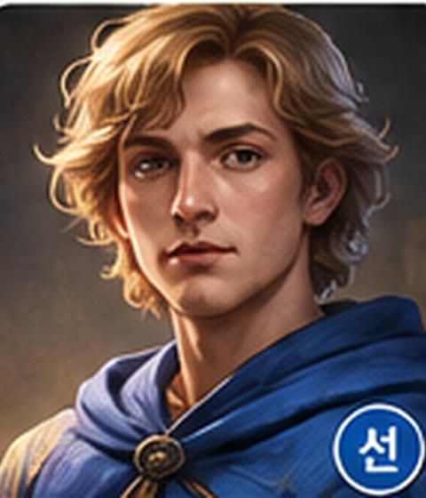
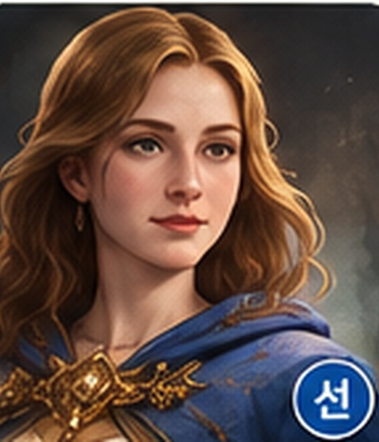
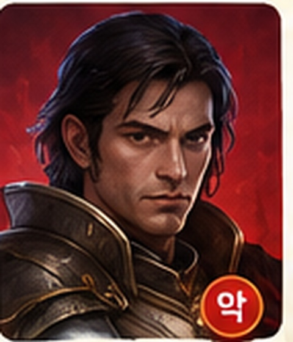
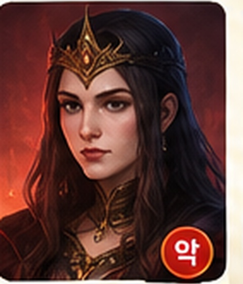
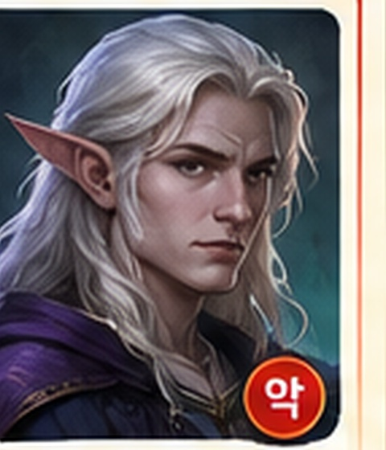

선멀린모드레드를 제외한 악을 압니다.
AN ONLINE SOCIAL DEDUCTION EXPERIENCE
서로의 얼굴을 보며 설득하고 의심하세요. 한 장의 비밀 카드가 당신을 멀린으로, 암살자로, 혹은 이름 없는 충신으로 만듭니다.
THE ROYAL ARCHIVE
가이드와 실제 게임의 역할 카드는 동일한 초상을 사용합니다. 게임 전에 얼굴과 이름을 익혀두면 추리가 훨씬 빠릅니다.




